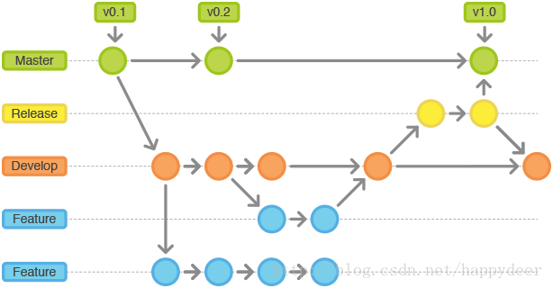

本文主讲基于git的多人协同管理工作流模式，适合刚入门或者入门不久的朋友学习，小白请参考 廖雪峰的git 。
git flow其实并没有增加或者减少git的命令，也可以说它是git branch的一套管理方式。它并不是一套“写死”的套路，而是一个管理思想或者说是一个管理模式。
理解它我们就能够更灵活的管理代码。
git flow工作流图解如下:

顾名思义，已经上线的分支。理论上与开发中的代码块完全隔离，程序员最不想动到的分支，因为责任重大。
重要性仅次于线上分支，所有子线分支都要合并到主线分支之后，才能上线上分支。
当要发布一个新的功能时，基于develop分出来的，做发布线上的最后一条分支，我认为作为测试用分支再合适不过了。
线上bug需要马上修改的，而不能下个版本一起发布的分支。理论上一个bug一个分支，完成bug修复后，删除该bug分支。
我知道肯定没看懂
下面分开讲解

每一个新功能的开发，都必须有一个新的分支，这是不仅为了团队合作，也为了不“污染”其他分支。
在创建开发分支时，父分支应该选择develop（而不是master），这类分支是可以合并到master。
创建新开发分支，最好从develop的tag节点去创建，避免和多个功能块混乱。

有一天老大说，下周我们要发布新版本，这周把所有做好新功能合并测试。
这时候我们就需要从develop检出一个开发分支，这个分支只修改bug，不做新功能。
注意：当发布分支合并到master的时候，同时也要合并到develop。
线上出问题了，而且不能下个版本发布，这个时候我们就需要创建一个BUG分支来处理这个临时bug。
BUG分支，我们应该选取master作为父分支，这时候如果选取develop作为父分支就有点远水救不了近火的感觉了。
处理完bug后，BUG分支应该先合并到develop，继而合并到master。始终保持develop包含master分支。